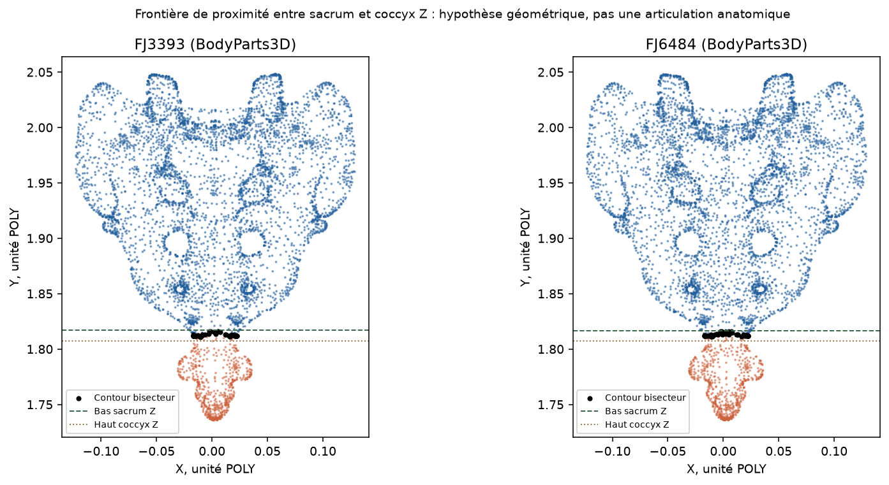

Protocole : choisir un repère, orienter les modèles par glissement, cliquer sa position anatomique correspondante dans chacun des deux maillages. Molette : zoom. Cliquer ailleurs n'ajoute pas d'insertion musculaire. Les axes, l'orientation et la latéralité doivent être confirmés avant la validation. Les repères des formes sont proposés à une revue humaine, jamais auto-validés.
Différence de découpage détectée : 649 sommets BodyParts3D se trouvent sous la limite caudale du sacrum Z-Anatomy ; 96,6 % sont plus proches du coccyx Z. La pointe inférieure de ce maillage peut donc ne pas correspondre à l’apex du seul sacrum. Ne pas sélectionner automatiquement sa pointe la plus basse. Il faut localiser la jonction sacro-coccygienne dans les deux modèles.
Comparer les deux maillages BodyParts3D « Sacrum » et leur frontière de proximité proposée
FJ3393 et FJ6484 partagent le concept source FMA16202 (Sacrum), tandis que Z-Anatomy représente sacrum et coccyx séparément. La frontière de proximité à Y≈1,812 n’est pas une articulation confirmée ; aucun point ne doit servir d’enthèse avant revue anatomique. Mesures de la frontière en JSON.
